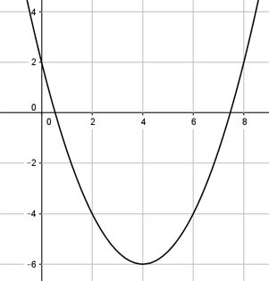

Aufgabe 94 Bestimmen Sie die Funktionsgleichung der dargestellten Parabel:  Allgemeine Form: y = ax2 + bx + c nach oben geöffnet, a muss positiv sein. Der Scheitelpunkt und ein weiterer Punkt können abgelesen und in die Scheitelpunktform y = a(x - xS)2 + yS eingesetzt werden. 2 Punktkoordinaten abgelesen: P1(6|-4) , Scheitelpunkt P2(4|-6) P1 ergibt: x = 6 und y = -4 P2 ergibt: xS = 4 und yS = -6 Eingesetzt in die Scheitelpunktform: y = a(x - xS)2 + yS -4 = a * (6 - 4)2 - 6 |+6 2 = a * 4 |:4 a = 0,5 Gestauchte Parabel, nach oben geöffnet Gesuchte Funktion : y = 0,5 (x - 4)2 - 6 y = 0,5(x2 - 8x + 16) - 6 y = 0,5x2 - 4x + 8 - 6 y = 0,5x2 - 4x + 2